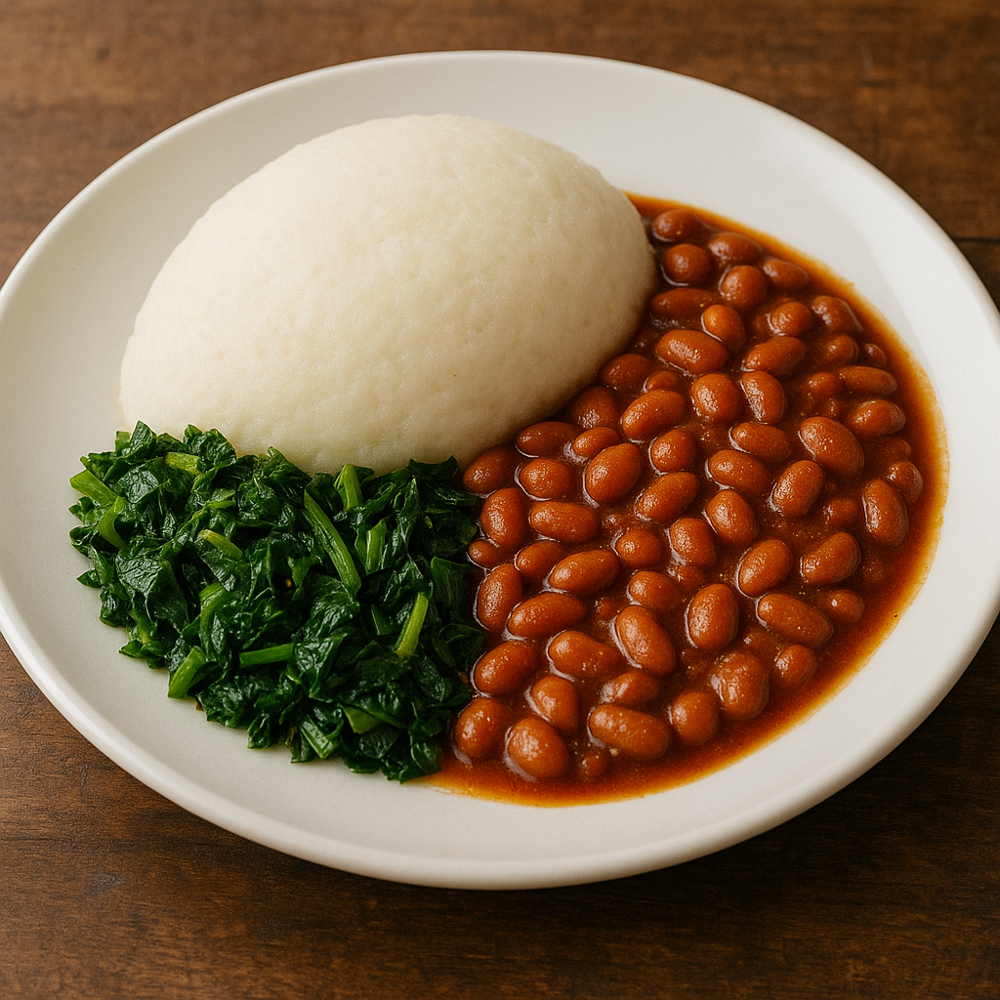

Home
NSIMA

DESCRIPTION
The plate features a traditional Malawian meal served on a clean white ceramic dish. At the center is a perfectly molded mound of nsima—smooth, dense, and white, with a slightly domed shape. To the right of the nsima is a generous portion of stewed beans, cooked in a rich, reddish-brown tomato sauce. The beans are plump and glossy, coated evenly by the savory sauce. On the left side of the nsima is a portion of green leafy vegetables—likely rape or mustard greens—cooked until tender but still vibrant in color. The arrangement is simple, colorful, and appetizing, with each component complementing the others in both texture and flavor.
INGREDIENTS
- White maize flour
- Beans
- Tomatoes
- Onions
- Chigwada vegetables
STEPS
- Boil Water: In a medium pot, bring 3 cups of water to a boil.
- Make a porridge: Mix ½ cup maize flour with 1 cup cold water in a bowl. Stir to make a smooth slurry.
- Add to boiling water: Pour the slurry into the boiling water while stirring constantly to avoid lumps.
- Simmer: Let it boil gently for 5–7 minutes while stirring occasionally.
- Add flour: Gradually add the remaining maize flour while stirring with a nthete (wooden cooking stick) until thick and smooth.
- Cook: Reduce heat and stir continuously until stiff and pulling from the sides (about 10 minutes).
- Shape and serve: Scoop and shape into mounds using a wet spoon.
- Boil the beans: Drain soaked beans, rinse, and boil in fresh water until soft (1–1.5 hours).
- Fry aromatics: In a pan, heat oil. Add onions, garlic (if using), and fry until golden.
- Add tomatoes: Stir in tomatoes. Cook until soft and saucy.
- Spice it up: Add salt, curry powder, and optional peppers or chili. Simmer.
- Combine: Add the cooked beans and a bit of their cooking water. Simmer for 10–15 minutes to thicken the stew.
- Sauté onion: Heat oil in a pan. Fry onions until soft.
- Add tomato: Cook until the tomato breaks down.
- Add greens: Stir in the vegetables, add a pinch of salt, and cook covered for 5–7 minutes.
- Optional richness: Add peanut butter or groundnut flour mixture and stir well.
- Cook through: Simmer for another 5 minutes.